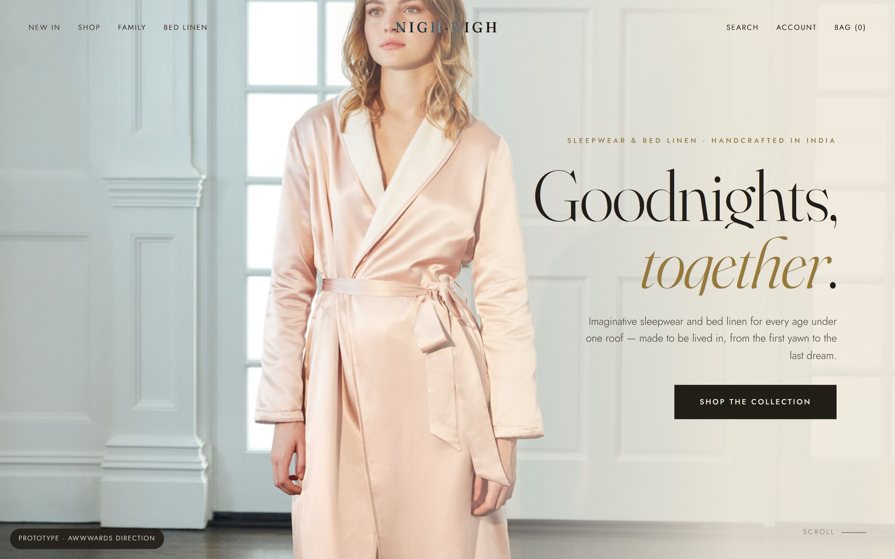
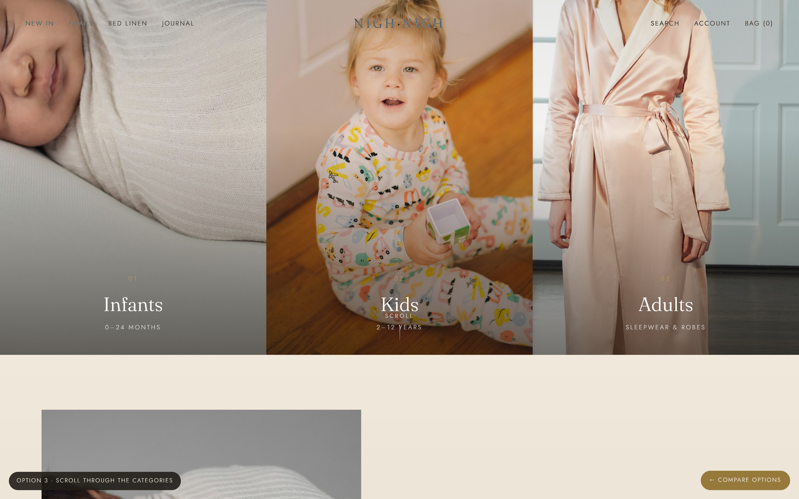

Both are light, luxury, and award-level — with the same content and the same Shopify foundation. Open each, scroll to feel the motion, and tell us which world feels most like Nigh Nigh.

Full-bleed imagery, a horizontal “Worlds to dream in” gallery, and refined typography. Calm, confident, and very premium — think The White Company meets Eberjey.

A split hero of Infants, Kids & Adults — then a real 3D garment that spins a full 360° as you scroll, changing colourway for each age. Built with WebGL.